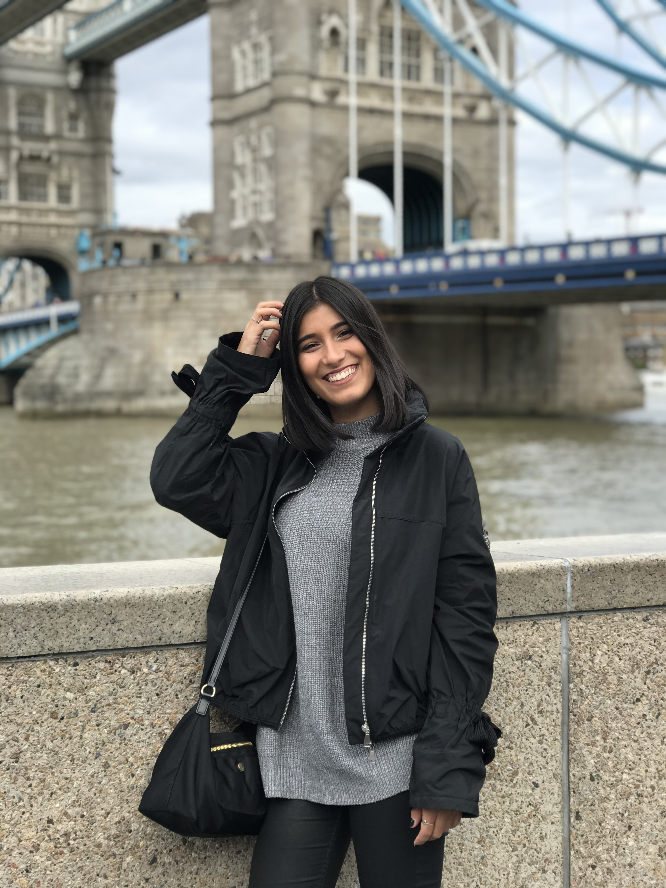

Ana João Machado
Graphic Designer.
I’m Ana, a freelance Communication Designer with a background in video
production. I am currently completing my Masters in Graphic design. As
a young freelancer based in London, I’m constantly surrounded by
different cultures, faces and places everyday, allowing my creativity
to flourish and enabling me to be productive in the art that I create.
I find creativity and inspiration through visiting museums, talking to
people from different backgrounds, and working on projects from my
current Masters degree. It’s allowing me to improve my current skills
in design, illustration, branding as well as develop new ones in
fine-art and editorials. Professionally, I've done branding and
identity for companies.
